The IDE
CSSC makes you say where every value lives and when it dies. That is the deal the language offers, and it only pays off if you can see what you said. So that is what the editor is for.
It opens with cssc workspace. It is 3,459 lines of CSSC,
which also makes it the first thing I break whenever I get the language
wrong.
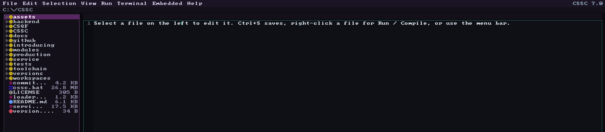
Ownership, both ends at once
Put the cursor anywhere in an allocation's life and both ends light up: the line that made it and the line that frees it. Take the free away and the allocation turns orange. Same file, two states.
{kind=link}
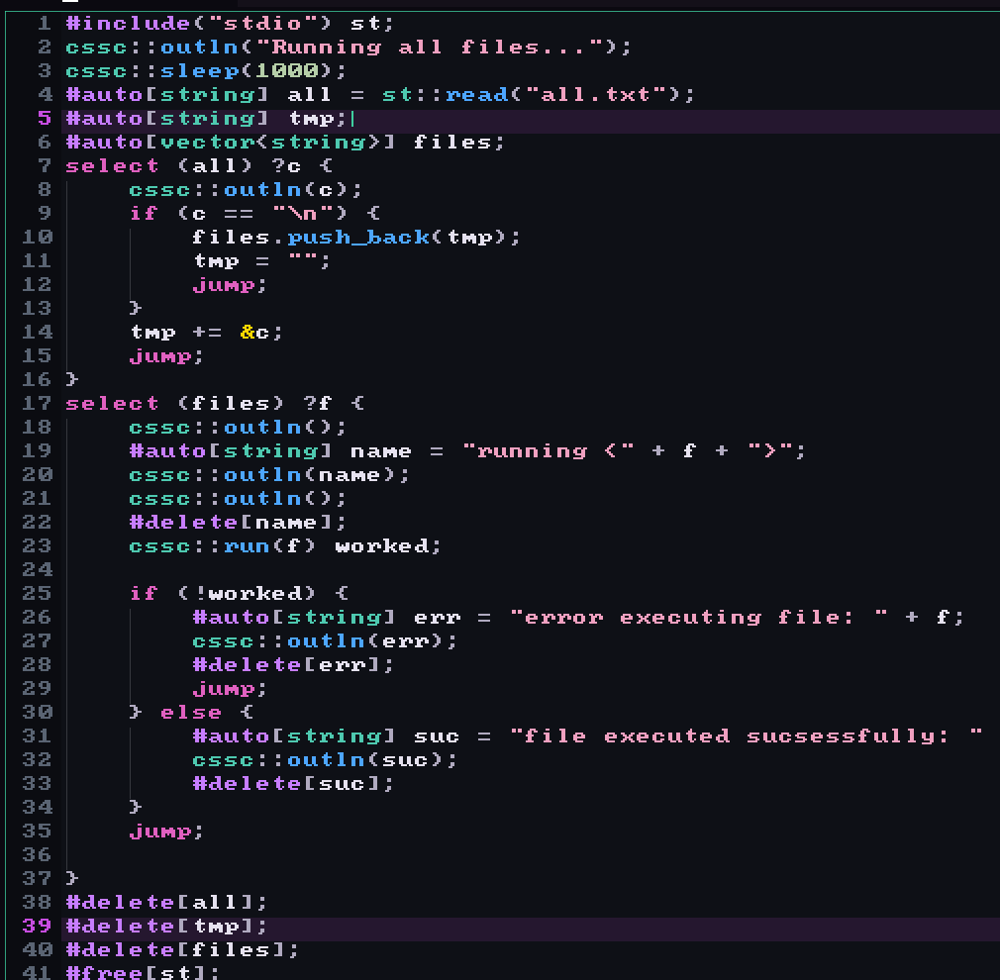
{kind=link}
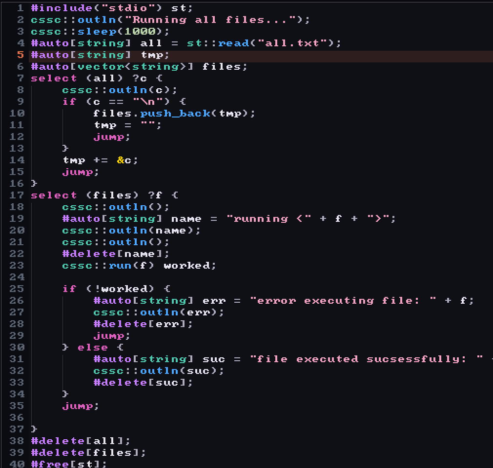
Autocleanup
F10 reads the file, works out what you allocated and never freed, and writes the frees in for you. Then it tells you exactly what it added.
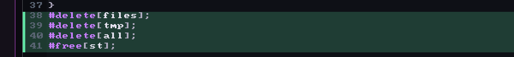
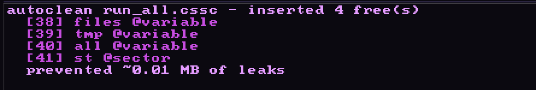
{kind=link}
The analyzer
F1 puts the analyzer's findings inline and F2 clears them again. It
reads ownership, not just syntax, so it catches the things the language
actually punishes you for. Here it is telling me that a select cursor is borrowed, that keeping it will leave a stale
reference once the loop ends, and what to write instead.
{kind=link}
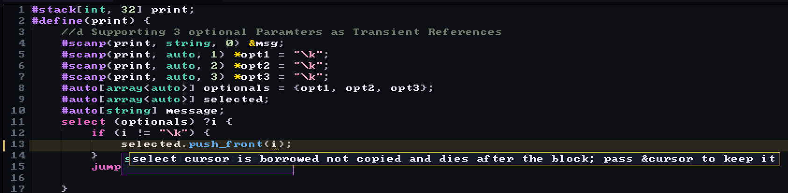
Watching it run
F5 runs the file on the interpreter. While it runs, the editor marks where the interpreter is: red for the line it is on, blue for what it has already been through.
{kind=link}
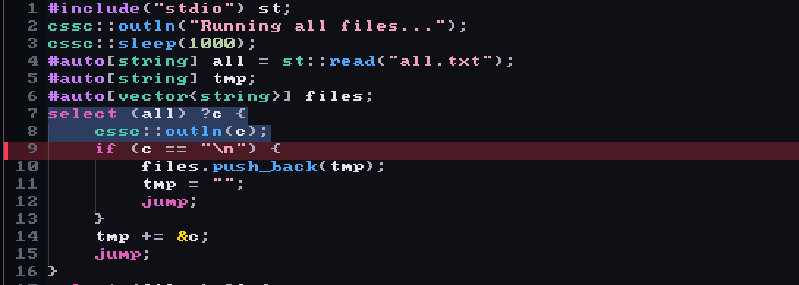
F4 tracks a single variable and logs every value it takes, each with the line that changed it. F3 does it on demand: hover a variable while the program runs and you get its value right now.
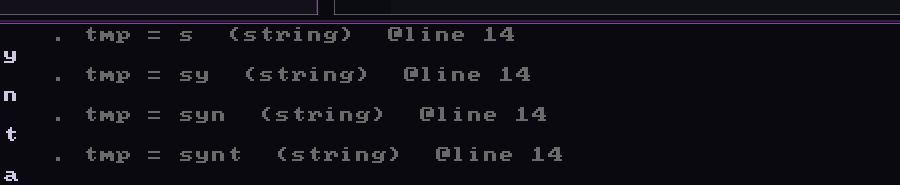
The language server
Hovering a slot gives you the type and the capacity in bits, which in CSSC is the part you actually need, along with what it was initialized to.
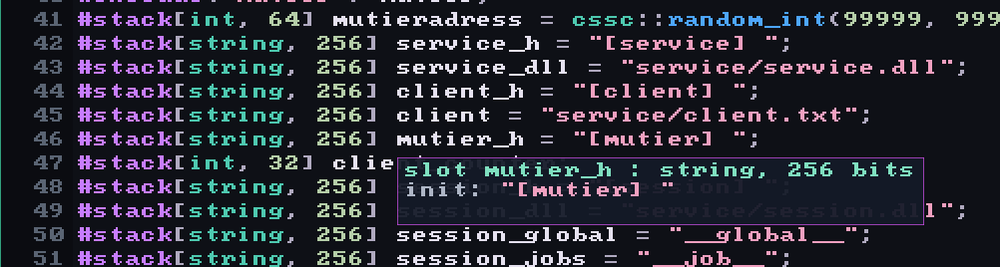
Completions know the cssc:: builtins and whatever module
you loaded. Argument hints show the signature while you are still inside
the parentheses.
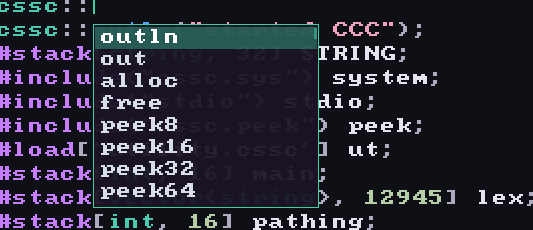
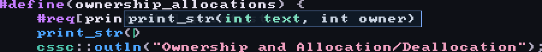
Comments you can color
Comments and block comments take \r()g()b() and the editor
renders them live, so a long file can carry structure you can see instead
of structure you have to remember. Docstrings work the same way: a //d line under a #define() belongs
to the function, the way Python taught me it should.
{kind=link}
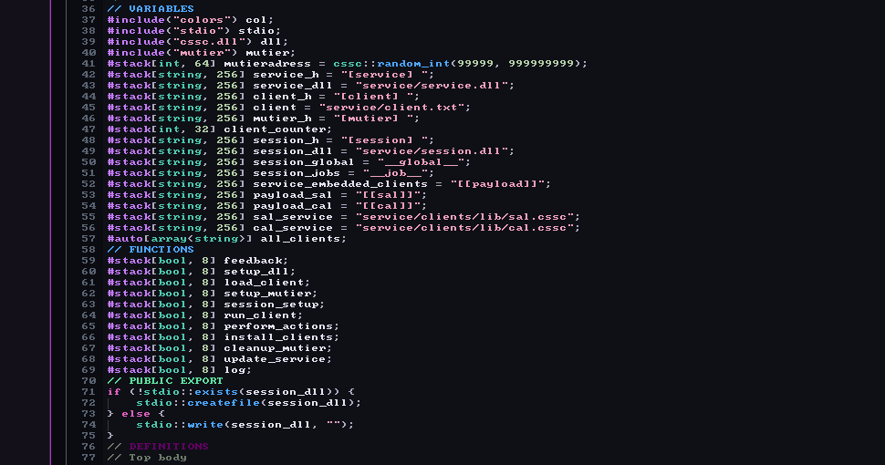
The keys
| key | what it does |
|---|---|
| F1 | show the analyzer's hints inline |
| F2 | hide every hint, from F1 and F10 both |
| F3 | hover a variable for its value at runtime |
| F4 | track one variable and log every value it takes |
| F5 | run on the interpreter |
| F6 | compile |
| F9 | introspect a module |
| F10 | autocleanup, insert the frees you forgot |
| F11 | fullscreen |
| Ctrl+R | paste several #req[] into a scope at once |
| Ctrl+D | the same for #delete[] |
There is a terminal in the window too, which takes CSSC commands like build and run as well as ordinary shell ones.